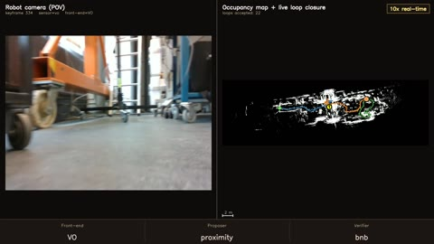
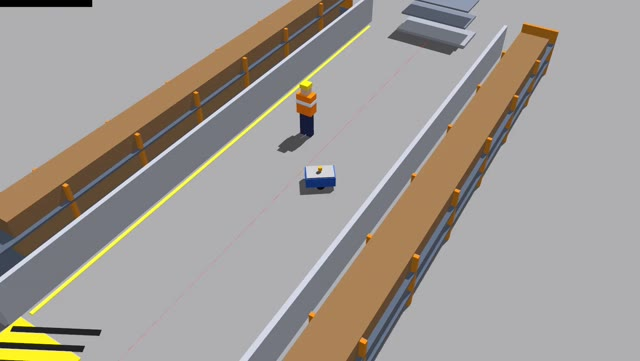
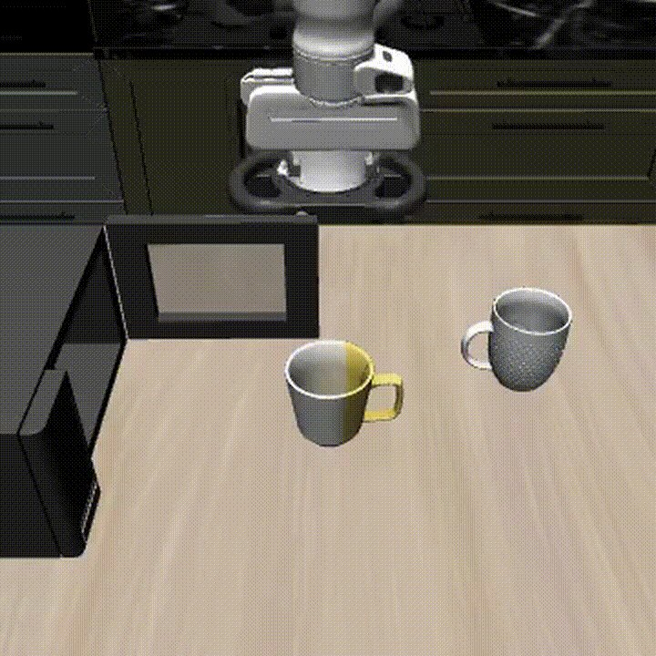
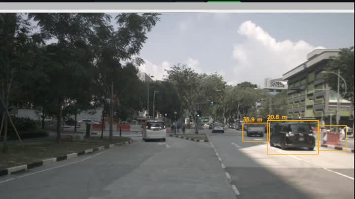
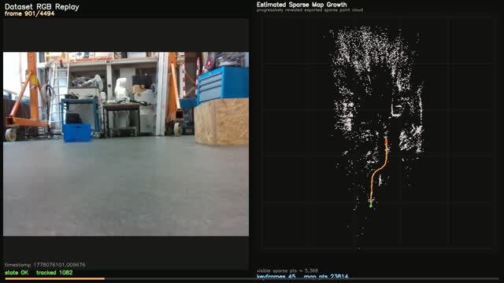
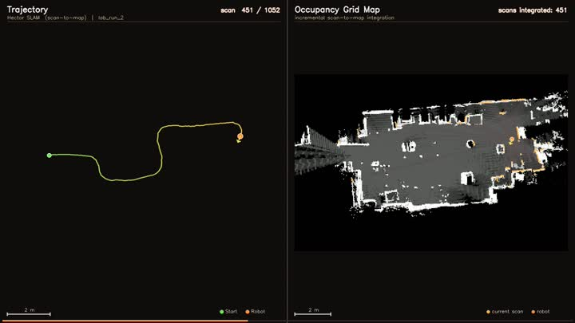

Modular, Sensor-Agnostic & Extensible SLAM Framework
Master Thesis
A single SLAM system where the front-end, loop proposer, and loop verifier are interchangeable modules across LiDAR and visual sensing. Composable into any pipeline, mixing LiDAR and visual sensing, and swappable live, mid-run, over one shared SE(2) map.
View full project

Safe Context-Adaptive Navigation for Industrial AMRs
An RL supervisor over an MPC + control-barrier-function stack that reads its safe speed and clearance off the map the robot already has - matching a hand-commissioned AMR on safety and transport time with zero per-site configuration.
View full project

Language-Conditioned Robotic Manipulation
Type a command, watch the robot execute it. A terminal-driven VLA interface using Pi0.5 and LIBERO - end-to-end from natural language to simulated robot action.
View full project

Multi-Object 3D Perception & Tracking
Every moving object detected, located in 3D space, and tracked across frames. A full ROS2 perception stack fusing camera and LiDAR, validated against nuScenes ground truth at 0.3m median spatial error.
View full project

ORB-SLAM2 Style Visual SLAM Pipeline
Full RGB-D visual SLAM built in Python - ORB tracking, local mapping, DBoW3 loop detection, Sim3 verification, and g2o bundle adjustment. Validated in real-time on a Jetson-powered mobile robot with zero tracking failures across 4494 frames.
View full project

Hector SLAM in Python with Pose-Graph Optimization
Scan-to-map SLAM with multi-resolution Gauss-Newton matching and offline pose-graph optimization. No odometry required. Validated in real-time on a Jetson-powered mobile robot beyond benchmark datasets.
View full project